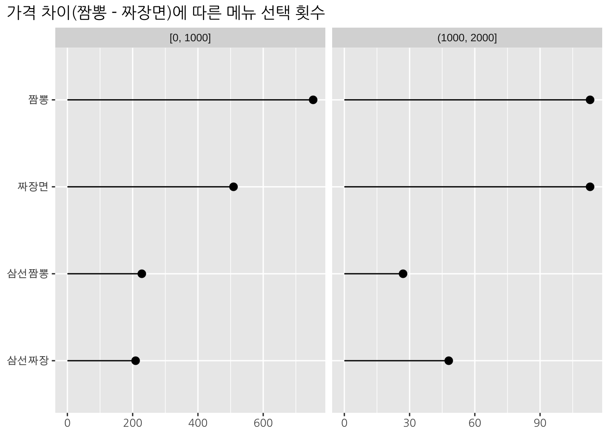

Chapter 2 Discrete choice model
library(extraDistr)
library(ggplot2)
library(ggtext)
library(ggrepel)
library(gt)
library(dplyr)
library(tidyr)
library(stringr)
library(rlang)
library(purrr)
library(mlogit)우리의 삶에는 수많은 선택의 순간들이 있다. 크게는 집을 구매할 때 어떤 집을 선택할지부터, 소소하게는 짬뽕과 짜장면 중 어떤 음식을 먹을지 선택해야한다. 물론, 가진 자원이 많다면 여러 채의 집을 구매할 수도 있고, 짬뽕과 짜장면 둘 다 주문에서 먹을 수도 있다. 하지만, 제한된 자원에서는 선택지 중 한 가지를 선택하면 나머지는 포기해야 하는 상황에 부딪힌다. 이 때, 사람들이 어떤 선택을 하는지를 모델링하는 방법이 있다. 본 장에서는 discrete choice model이라 불리는 방법에 대해 알아보자.
2.1 Data
아래와 같이 데이터를 정의해보자.
2.1.1 Choice
- \(j = 1, \ldots, J\): 선택할 수 있는 \(J\)개의 서로 다른 대안(alternative). 예를 들어, 짬뽕(\(j = 1\))과 짜장면(\(j = 2\)).
- \(i = 1, \ldots, N\): 선택하여야 하는 상황(choice situation). 예를 들어, 100명의 손님이 있다면, 각각의 손님(\(i = 1, \ldots, 100\))은 짬뽕과 짜장면 중 한 가지 음식을 선택하여야 한다.
- \(y_{ij}\): \(i\)번째 선택 상황에서 \(j\)번째 대안이 선택되었다면 1, 아니라면 0.
이 때, \(y_{ij}\)는 모든 \(i\)에 대해 다음과 같은 제약을 만족한다.
\[ \sum_{j = 1}^{J} y_{ij} = 1\\ y_{ij} \in \{0, 1\} \]
2.1.2 Covariate
선택 변수 \(y_{ij}\)의 값은 선택 상황에 대한 설명 변수들과 상관관계가 있을 수 있다. 예를 들어, 손님의 나이가 어릴수록 짜장면을 선택할 확률이 높다거나, 날씨가 비가 오면 짬뽕을 선택할 확률이 높다거나, 음식 가격이 비쌀수록 해당 음식을 선택할 확률이 줄어들 수 있다. 이러한 변수의 벡터를 아래 \(\mathbf{x}_{ij}\)와 \(\mathbf{z}_{i}\) 두 가지로 나누어 정의하자.
- \(\mathbf{x}_{ij}\): \(i\)번째 선택 상황에서 \(j\)번째 대안에 대한 설명변수 관측치 (음식 가격 등)
- \(\mathbf{z}_{i}\): \(i\)번째 선택 상황에 대한 설명변수 관측치 (손님 나이, 날씨 등)
위에서 \(\mathbf{x}_{ij}\)는 이후에 다시 두 가지 벡터로 분리된다.
2.1.3 Availability
\(i\)번째 선택 상황에서 \(j\)번째 대안이 선택 가능하지 않는 경우들이 있다. 예를 들어, 재료수급 문제로 짬뽕이 품절이었거나, 손님이 가진 현금이 짬뽕을 주문하기 부족한 경우, 짬뽕은 선택 가능한 대안에서 제외되게 된다. 이를 표현하기 위해 변수 \(a_{ij}\)를 아래와 같이 정의하자.
- \(a_{ij}\): \(i\)번째 선택 상황에서 \(j\)번째 대안이 선택 가능했다면 1, 아니라면 0.
이 때, \(a_{ij}\) 와 \(y_{ij}\)간에는 아래와 같은 관계가 성립한다.
\[ a_{ij} \geq y_{ij} \]
따라서,
\[ \sum_{j = 1}^{J} a_{ij} \geq \sum_{j = 1}^{J} y_{ij} = 1 \]
즉, 적어도 하나의 대안은 선택 가능하여야 한다.
\(i\)번째 선택 상황에서 선택 가능한 대안의 집합을 \(A_i\)라 하자.
\[ A_i = \left\{j : a_{ij} = 1 \right\} \]
이 때, \(y_{ij}\)값은 아래와 같은 조건을 만족한다.
\[ \sum_{j \in A_i} y_{ij} = 1\\ y_{ij} \in \{0, 1\}, \; \forall j \in A_i\\ y_{ij} = 0, \; \forall j \notin A_i\\ \]
2.1.4 “No choice” alternative
앞서 availability 측면에서 고려했던, 짬뽕이 선택 가능하지 않고 짜장면만 선택 가능한 경우, \(\sum_{j = 1}^{J} y_{ij} = 1\)에 따라 무조건 짜장면을 선택하게 된다. 하지만, 짬뽕이 선택 가능하지 않았을 때, 짜장면을 먹는 대신 다른 음식점을 찾아가는 경우를 예상해볼 수 있다. 이 때, 손님은 선택 가능한 대안 중 어떠한 선택도 하지 않은 것이 되어 \(\sum_{j = 1}^{J} y_{ij} = 1\)을 만족하지 못한다.
이 때, 해당 선택 상황을 분석에서 제외하는 대신, 모든 선택 상황에서 \(J\)개의 대안 중 어떠한 대안도 선택하지 않는 \(J + 1\)째의 대안을 고려할 수 있다. 이에 대한 구체적은 예는 이후 다시 다루도록 하자.
2.1.5 데이터 예
| 손님ID | 손님나이 | 음식 | 가격 | 선택여부 |
|---|---|---|---|---|
| 1 | 40 | 짬뽕 | 8000 | 1 |
| 1 | 40 | 짜장면 | 7000 | 0 |
| 2 | 10 | 짬뽕 | 5000 | 0 |
| 2 | 10 | 짜장면 | 5000 | 1 |
| 3 | 70 | 짜장면 | 6500 | 1 |
2.2 Utility
\(i\)번째 선택 상황에서 \(j\)번째 대안에 대한 효용성의 값을 \(u_{ij} \in \mathbb{R}\)이라 하자. 이 때, 합리적인 선택은 효용성이 가장 큰 대안을 선택하는 것이다. 본 장에서 다룰 기본적인 discrete choice model들은 이러한 합리적인 선택을 가정한다.
\[ y_{ij} = \begin{cases} 1 & j = \arg\max_{j \in A_i} u_{ij}\\ 0 & \text{otherwise} \end{cases} \]
이 때, \(u_{ij}\)는 관측되지 않는 값이다. 이를 두 개의 부분으로 아래와 같이 나눈다.
\[ u_{ij} = v_{ij} + \varepsilon_{ij} \]
이 때, \(v_{ij}\)는 관측된 설명변수 \(\mathbf{x}_{ij}\)와 \(\mathbf{z}_i\)에 대한 함수이며, \(\varepsilon_{ij}\)는 설명변수로는 설명되지 않는 부분이다.
\[ v_{ij} = f(\mathbf{x}_{ij}, \mathbf{z}_i) \]
이 때, 함수 \(f()\)의 형태나 \(\varepsilon_{ij}\)에 대한 가정에 따라 다양한 형태의 discrete choice model이 존재한다. 이후 본 장에서는 가장 간단한 두 가지 모형들(multinomial logit model, nested logit model)을 살펴보기로 하자.
2.2.1 Observable utility (Representative utility)
\(v_{ij}\)는 observable utility 혹은 representative utility라 한다. \(v_{ij}\)를 설명변수에 대한 affine 함수로 아래와 같이 정의하자.
\[ v_{ij} = \alpha_j + \boldsymbol{\beta}^{\top} \mathbf{x}_{ij} + \boldsymbol{\gamma}_j^{\top} \mathbf{z}_i + \boldsymbol{\delta}_j \mathbf{x}_{ij} \]
이 때, \(\boldsymbol{\beta}\)는 모든 대안 \(j\)에 동일하게 적용되는 계수벡터이며, \(\boldsymbol{\gamma}_j\)와 \(\boldsymbol{\delta}_j\)는 대안 \(j\)에 따라 다른 값을 지니는 계수벡터이다. 변수 벡터 \(\mathbf{x}_{ij}\)내의 각 변수는 \(\boldsymbol{\beta}\)와 \(\boldsymbol{\delta}_j\) 중 한 가지의 회귀계수에만 해당한다고 가정하고, 설명변수 벡터 \(\mathbf{w}_{ij}\)를 추가로 정의하자.
\[ v_{ij} = \alpha_j + \boldsymbol{\beta}^{\top} \mathbf{x}_{ij} + \boldsymbol{\gamma}_j^{\top} \mathbf{z}_i + \boldsymbol{\delta}_j \mathbf{w}_{ij} \]
여기에서, 각각의 변수에 대한 예는 아래와 같이 생각해볼 수 있다.
- \(\mathbf{x}_{ij}\): (예: 음식가격) 음식 가격은 각 메뉴별로 다르나, 손님이 느끼는 효용성에 가격이 미치는 영향은 단위 가격당 동일한 경우, 음식 가격에 적용되는 계수 \(\beta\)의 값은 대안 \(j\)와 상관없이 동일할 수 있다.
- \(\mathbf{z}_{i}\): (예: 나이) 나이가 어릴수록 짜장면을 선호하고 짬뽕을 덜 선호하는 경향이 커지는 경우, 나이에 적용되는 계수 \(\gamma\)의 값은 짬뽕(\(j = 1\))에 대한 계수값보다 짜장면(\(j = 2\))에 대한 계수값이 크다고 볼 수 있다 (\(\gamma_1 < \gamma_2\)).
- \(\mathbf{w}_{ij}\): (예: 음식가격) 만약 음식에 느끼는 효용성에 가격이 미치는 영향이 메뉴별로 다를 경우, 음식 가격은 \(\mathbf{x}_{ij}\)가 아닌 \(\mathbf{w}_{ij}\)에 해당하는 변수라 할 수 있다. 짜장면 가격이 500원 증가할 때 느끼는 효용성의 감소가 짬뽕 가격이 500원 증가할 때 느끼는 효용성의 감소보다 크다면, 즉 효용성 가격 민감도가 짜장면의 경우가 더 크다면, \(\delta_2 < \delta_1 < 0\)라 볼 수 있다 (\(|\delta_2| > |\delta_1|\)).
위의 세 가지 변수 종류 중 본 장에서는 두 가지 변수 \(\mathbf{x}_{ij}\)와 \(\mathbf{z}_{i}\)를 중심으로 살펴보자. 아래와 같이 보다 단순한 형태의 \(v_{ij}\)를 고려하도록 하자.
\[ v_{ij} = \alpha_j + \boldsymbol{\beta}^{\top} \mathbf{x}_{ij} + \boldsymbol{\gamma}_j^{\top} \mathbf{z}_i \]
여기에서, \(\mathbf{x}_{ij} \in \mathbb{R}^r\), \(\mathbf{z}_{i} \in \mathbb{R}^s\)라 할 때, 모든 \((i, j)\)에 대한 \(v_{ij}\)는 아래 세 가지 파라미터를 이용한 함수이다.
\[ \boldsymbol{\alpha} = (\alpha_1, \ldots, \alpha_J) \in \mathbb{R}^J\\ \boldsymbol{\beta} = (\beta_1, \ldots, \beta_r) \in \mathbb{R}^r\\ \boldsymbol{\gamma} = (\gamma_{11}, \ldots, \gamma_{1s}, \gamma_{21}, \ldots, \gamma_{Js}) \in \mathbb{R}^{J \times s} \]
이 때, 주어진 데이터로부터 회귀계수들의 추정치 \(\hat{\boldsymbol{\alpha}}, \hat{\boldsymbol{\beta}}, \hat{\boldsymbol{\gamma}}\)을 구하는 것이 discrete choice model 추정이다.
2.2.2 Unobservable utility
\(\varepsilon_{ij}\)는 효용성 중 covariate으로 설명되지 않는 부분이다. 같은 나이의 두 손님이 동일한 가게에서 동일한 시각에 각자 식사를 하더라도, 한 명은 짬뽕을 선택하고 다른 한 명은 짜장면을 선택할 수 있다. 이는 설명변수(나이, 가격 등)로 설명되지 않는 각 손님의 개인적인 취향에 기인한 것으로 생각할 수 있다.
임의의 \(i\)번째 선택 상황에서, \(j \in A_i\)에 대해 \(v_{ij}\)의 참값은 알고 있고 \(y_{ij}\)값은 관측되지 않았다 할 때, \(y_{ij}\)에 대한 기대값은 아래와 같이 표현할 수 있다.
\[\begin{eqnarray*} E[y_{ij}] &=& \prod_{k \in A_i \backslash j} P(u_{ij} > u_{ik})\\ &=& \prod_{k \in A_i \backslash j} P(v_{ij} + \varepsilon_{ij} > v_{ik} + \varepsilon_{ik})\\ &=& \prod_{k \in A_i \backslash j} P(\varepsilon_{ij} - \varepsilon_{ik} > v_{ik} - v_{ij}) \end{eqnarray*}\]
여기서, \(y_{ij}\)의 기대값을 \(p_{ij}\)라 하면 (\(p_{ij} = E[y_{ij}]\)), \(p_{ij}\)는 아래의 식들을 만족한다.
\[ \sum_{j \in A_i} p_{ij} = 1\\ p_{ij} \in [0, 1] \]
\(y_{ij}\) (\(j = 1, \ldots, J\))는 확률 \(p_{ij}\) (\(j = 1, \ldots, J\))로 정의된 multinomial distribution으로부터 얻어진 관측치라 하자.
\[ (y_{i1}, \ldots, y_{iJ}) \sim multinom(p_{i1}, \ldots, p_{iJ}) \]
위에서, \(\varepsilon_{ij}\)의 분포에 대한 가정에 따라 \(p_{ij}\)의 값이 다르게 추정된다. 따라서 discrete choice model 추정에서는 observable utility에 대한 model specification 뿐만 아니라 unobservable utility에 대한 분포 가정 또한 중요하다. 다음 장에서 살펴볼 multinomial logit model과 nested logit model은 \(\varepsilon_{ij}\)의 분포에 대해 서로 다른 가정을 지닌다.
2.2.3 Maximum likelihood estimation
각 선택상황 \(i = 1, \ldots, N\)에서의 선택이 서로 독립이라 할 때, 파리미터값 \(\boldsymbol{\alpha}, \boldsymbol{\beta}, \boldsymbol{\gamma}\)에 대한 우도함수(likelihood function)는 아래와 같이 표현된다.
\[ L(\boldsymbol{\alpha}, \boldsymbol{\beta}, \boldsymbol{\gamma}) = \prod_{i = 1}^{N} \prod_{j = 1}^{J} p_{ij} ^ {y_{ij}} \]
따라서, 로그우도함수(log-likelihood function)는 아래와 같이 표현된다.
\[ l(\boldsymbol{\alpha}, \boldsymbol{\beta}, \boldsymbol{\gamma}) = \sum_{i = 1}^{N} \sum_{j = 1}^{J} y_{ij} \log p_{ij} \]
이때, 파리미터 \(\boldsymbol{\alpha}, \boldsymbol{\beta}, \boldsymbol{\gamma}\)는 위 로그우도함수를 최대화하는 값으로 추정할 수 있다.
\[ \{\hat{\boldsymbol{\alpha}}, \hat{\boldsymbol{\beta}}, \hat{\boldsymbol{\gamma}}\} = {\arg\max}_{\boldsymbol{\alpha}, \boldsymbol{\beta}, \boldsymbol{\gamma}} l(\boldsymbol{\alpha}, \boldsymbol{\beta}, \boldsymbol{\gamma}) \]
위에서 우도함수 및 로그우도함수를 \(y_{ij}\)와 \(p_{ij}\)를 이용하여 표현한 식은 multiclass classification 문제에서 널리 볼 수 있다 (명목형 로지스틱 회귀모형 등). 결국, \(p_{ij}\)의 모형이 어떻게 정의되는지에 그 차이가 존재한다. 다음 절에서는 구체적으로 \(p_{ij}\)의 모형을 살펴보기로 한다.
2.3 Multinomial logit (MNL) model
Discrete choice model을 얘기할 때 가장 기본으로 다루는 모형이다.
2.3.1 Utility
\[ u_{ij} = v_{ij} + \varepsilon_{ij} \]
에서, unobservable utility \(\varepsilon_{ij}\)가 standard Gumbel distribution으로부터 얻어진다고 가정한다.
\[ \varepsilon_{ij} \overset{i.i.d.}{\sim} Gumbel(0, 1) \]
이 때, standard Gumbel distribution은 아래와 같다.
\[ f(\varepsilon_{ij}) = \exp\left(-\varepsilon_{ij}\right) \exp\left(-\exp\left(-\varepsilon_{ij}\right)\right)\\ F(\varepsilon_{ij}) = \exp\left(-\exp\left(-\varepsilon_{ij}\right)\right) \]
2.3.2 Choice probablity
모든 대안 \(j\)에 대해 observable utility \(v_{ij}\)와 alternative availability \(a_{ij}\)가 주어진 상황에서, \(j\)번째 대안이 선택될 확률 \(p_{ij}\)는 아래와 같이 계산된다.
\[ p_{ij} = \begin{cases} \frac{\exp(v_{ij})}{\sum_{k \in A_i} \exp(v_{ik})} & \text{if } a_{ij} = 1,\\ 0 & \text{otherwise}. \end{cases} \]
2.3.2.1 Choice probablity 계산
여기에서는 위 \(p_{ij}\)가 계산되는 식을 유도해본다.
임의의 \(j, k \in A_i, \, j \neq k\)에 대해서,
\[ P(v_{ij} + \varepsilon_{ij} > v_{ik} + \varepsilon_{ik}) = P(\varepsilon_{ik} < \varepsilon_{ij} + v_{ij} - v_{ik}) \]
여기서 \(\varepsilon_{ij}\)값이 주어졌다고 가정하면, 아래와 같이 \(\varepsilon_{ik}\)의 조건부 확률분포가 Gumbel distribution으로 얻어진다.
\[ P(\varepsilon_{ik} < \varepsilon_{ij} + v_{ij} - v_{ik} \, | \, \varepsilon_{ij}) = \exp\left(-\exp\left(-\left(\varepsilon_{ij} + v_{ij} - v_{ik}\right)\right)\right) \]
띠라서, \(\varepsilon_{ij}\)값이 주어졌을 때 \(j\)번째 대안이 선택될 조건부 확률은 아래와 같다.
\[ \prod_{k \in A_i \backslash j} P(\varepsilon_{ik} < \varepsilon_{ij} + v_{ij} - v_{ik} \, | \, \varepsilon_{ij}) = \prod_{k \in A_i \backslash j} \exp\left(-\exp\left(-\left(\varepsilon_{ij} + v_{ij} - v_{ik}\right)\right)\right) \] 이 조건부 확률을 \(\varepsilon_{ij}\)의 분포를 적용하여 적분하면, \(\varepsilon_{ij}\)값이 주어지지 않은 상태에서 \(j\)번째 대안이 선택될 확률을 구할 수 있다.
\[ p_{ij} = \int_{-\infty}^{\infty} \left( \prod_{k \in A_i \backslash j} \exp\left(-\exp\left(-\left(\varepsilon_{ij} + v_{ij} - v_{ik}\right)\right)\right) \right) f(\varepsilon_{ij}) \, d\varepsilon_{ij}\\ = \int_{-\infty}^{\infty} \left( \prod_{k \in A_i \backslash j} \exp\left(-\exp\left(-\left(\varepsilon_{ij} + v_{ij} - v_{ik}\right)\right)\right) \right) \exp\left(-\varepsilon_{ij}\right) \exp\left(-\exp\left(-\varepsilon_{ij}\right)\right) \, d\varepsilon_{ij} \]
여기에서, \(v_{ij} - v_{ij} = 0\)임을 이용하면,
\[ p_{ij} = \int_{-\infty}^{\infty} \left( \prod_{k \in A_i} \exp\left(-\exp\left(-\left(\varepsilon_{ij} + v_{ij} - v_{ik}\right)\right)\right) \right) \exp\left(-\varepsilon_{ij}\right) \, d\varepsilon_{ij}\\ = \int_{-\infty}^{\infty} \exp \left(-\sum_{k \in A_i} \exp\left(-\left(\varepsilon_{ij} + v_{ij} - v_{ik}\right)\right)\right) \exp\left(-\varepsilon_{ij}\right) \, d\varepsilon_{ij}\\ = \int_{-\infty}^{\infty} \exp \left(-\exp(-\varepsilon_{ij}) \sum_{k \in A_i} \exp\left(-\left(v_{ij} - v_{ik}\right)\right)\right) \exp\left(-\varepsilon_{ij}\right) \, d\varepsilon_{ij} \]
이 때, \(t = \exp(-\varepsilon_{ij})\)라 하면 (\(t \in (0, \infty)\)), \(dt = - \exp(-\varepsilon_{ij}) \, d\varepsilon_{ij}\)임을 이용하여 아래와 같이 식을 전개할 수 있다.
\[ p_{ij} = \int_{\infty}^{0} \exp \left(-t \sum_{k \in A_i} \exp\left(-\left(v_{ij} - v_{ik}\right)\right)\right) \, (-dt)\\ = \int_{0}^{\infty} \exp\left(-t \sum_{k \in A_i} \exp\left(-\left(v_{ij} - v_{ik}\right)\right)\right) \, dt\\ = \left. \frac{\exp\left(-t \sum_{k \in A_i} \exp\left(-\left(v_{ij} - v_{ik}\right)\right)\right)}{-\sum_{k \in A_i} \exp\left(-\left(v_{ij} - v_{ik}\right)\right)} \right|_{0}^{\infty}\\ = \frac{1}{\sum_{k \in A_i} \exp\left(-\left(v_{ij} - v_{ik}\right)\right)}\\ = \frac{\exp(v_{ij})}{\sum_{k \in A_i} \exp(v_{ik})} \]
2.3.3 Independent from irrelevant alternatives (IIA)
Multinomial logit model에서는 서로 다른 두 개의 대안 \(j\)와 \(k\)간의 상대적인 선택확률(\(p_{ij} / p_{ik}\))은 또 다른 대안 \(l \notin \{j, k\}\)을 선택할 확률 \(p_{il}\)에 영향을 받지 않는다고 가정한다.
\[ \frac{p_{ij}}{p_{ik}} = \frac{\exp(v_{ij})}{\exp(v_{ik})} \]
이는 어떠한 두 대안이 다른 대안들보다 더 강한 대체관계를 가지지는 않는다는 것을 의미한다. 현실의 선택상황에서는 이러한 가정이 성립하지 않는 경우가 많으며, 이에 대한 방법은 다음 nested logit model절에서 더 다루기로 한다.
2.3.4 예제
Multinomial logit model의 추정과 그로부터 확률을 추정하는 과정을 아래 예제 데이터와 R 스크립트로 살펴보도록 하자.
2.3.4.1 데이터 모델
네 가지 메뉴가 있는 식당을 고려해보자. 각 선택 상황에 따라 가격과 메뉴 주문 가능 여부는 매번 달라진다고 가정하자.
- 대안
- \(j = 1\): 짬뽕
- \(j = 2\): 짜장면
- \(j = 3\): 삼선짬뽕
- \(j = 4\): 삼선짜장
- 설명변수
- \(x_{ij}\): \(i\)번째 손님이 \(j\)번째 음식에 대해 지불해야 할 가격 \[\begin{eqnarray*} x_{i1} &\sim& U(5000, 7000)\\ x_{i2} &\sim& U(5000, x_{i1})\\ x_{i3} &\sim& x_{i1} + U(2000, 4000)\\ x_{i4} &\sim& x_{i2} + (x_{i3} - x_{i1}) + U(-500, 0) \end{eqnarray*}\]
- \(z_{i}\): \(i\)번째 손님의 나이 \[ z_i \sim U(5, 95) \]
- Observable utility \[\begin{eqnarray*} v_{i1} &=& 0 - 0.001 \times x_{i1} + 0 \times z_{i}\\ v_{i2} &=& 4 - 0.001 \times x_{i2} - 0.1 \times z_{i}\\ v_{i3} &=& 2 - 0.001 \times x_{i3} + 0 \times z_{i}\\ v_{i4} &=& 6 - 0.001 \times x_{i4} - 0.1 \times z_{i} \end{eqnarray*}\]
- Unobservable utility
- \(\varepsilon_{ij} \overset{i.i.d.}{\sim} Gumbel(0, 1)\)
- Availability \[\begin{eqnarray*} a_{i1} &=& 1\\ a_{i2} &=& 1\\ a_{i3} &\sim& Bernoulli(0.8)\\ a_{i4} &\sim& Bernoulli(0.8) \end{eqnarray*}\]
set.seed(2)
N <- 2000
menu <- c("짬뽕" = 1, "짜장면" = 2, "삼선짬뽕" = 3, "삼선짜장" = 4)
menu_name <- names(menu)
alpha_true <- c(0, 4, 2, 6)
beta_true <- -0.001
gamma_true <- c(0, -0.1, 0, -0.1)
generate_price <- function(N) {
tibble(
i = seq_len(N),
price1 = runif(N, 5000, 7000),
price2 = runif(N, 5000, price1),
price3 = price1 + runif(N, 2000, 4000),
price4 = price2 + price3 - price1 + runif(N, -500, 0)
) %>%
pivot_longer(
cols = price1:price4,
names_to = "alternative",
names_prefix = "price",
names_transform = list(alternative = as.integer),
values_to = "price"
)
}
generate_age <- function(N) {
tibble(
i = seq_len(N),
age = runif(N, 5, 95)
)
}
generate_availability <- function(N) {
tibble(
i = seq_len(N),
avail1 = 1,
avail2 = 1,
avail3 = avail1 * rbern(N, 0.8),
avail4 = avail2 * rbern(N, 0.8)
) %>%
pivot_longer(
cols = avail1:avail4,
names_to = "alternative",
names_prefix = "avail",
names_transform = list(alternative = as.integer),
values_to = "avail"
)
}
choice_df <- generate_price(N) %>%
inner_join(generate_age(N), by = "i") %>%
inner_join(generate_availability(N), by = c("i", "alternative")) %>%
filter(avail == 1) %>%
mutate(
v = alpha_true[alternative] +
beta_true * price + gamma_true[alternative] * age,
e = rgumbel(n()),
u = v + e
) %>%
mutate(menu_item = menu_name[alternative]) %>%
select(-avail) %>%
group_by(i) %>%
mutate(choice = if_else(u == max(u), 1L, 0L)) %>%
ungroup()


2.3.4.2 모델 추정
R 패키지 {mlogit}의 함수 mlogit()을 이용하여 multinomial logit model을 추정할 수 있다.
fit_mnl <- mlogit(choice ~ price | age, data = choice_df,
alt.var = "alternative", chid.var = "i")estimate_df <- tibble(
term = names(fit_mnl$coefficients),
estimate = coef(fit_mnl),
std.error = sqrt(diag(solve(-fit_mnl$hessian))),
true = c(alpha_true[-1], beta_true, gamma_true[-1])
)| term | estimate | std.error | true |
|---|---|---|---|
| (Intercept):2 | 3.8375930 | 0.2096440 | 4.000 |
| (Intercept):3 | 2.3640126 | 0.3578062 | 2.000 |
| (Intercept):4 | 5.8438709 | 0.3064476 | 6.000 |
| price | -0.0010338 | 0.0000823 | -0.001 |
| age:2 | -0.0985531 | 0.0043177 | -0.100 |
| age:3 | -0.0045850 | 0.0038677 | 0.000 |
| age:4 | -0.0930937 | 0.0049826 | -0.100 |
위 추정 결과, 각 파라미터에 대해 추정된 95% 신뢰구간들은 실제 데이터 모델에서 사용된 파라미터값(true values)을 포함하고 있음을 확인할 수 있다.
2.3.4.3 확률 추정
추정된 모형에 기반하여, 다음과 같은 메뉴판이 주어졌을 때 손님의 선택을 예측해보자.
alpha_hat <- c(0, coef(fit_mnl)[c("(Intercept):2", "(Intercept):3", "(Intercept):4")])
beta_hat <- coef(fit_mnl)[c("price")]
gamma_hat <- c(0, coef(fit_mnl)[c("age:2", "age:3", "age:4")])new_choice_situation <- tribble(
~menu_item, ~price,
"짬뽕", 7000,
"짜장면", 6000,
"삼선짬뽕", 10000,
"삼선짜장", 9000
) %>%
mutate(
alternative = menu[menu_item]
)| menu_item | price | alternative |
|---|---|---|
| 짬뽕 | 7000 | 1 |
| 짜장면 | 6000 | 2 |
| 삼선짬뽕 | 10000 | 3 |
| 삼선짜장 | 9000 | 4 |
이 때, 손님의 나이가 15세인 경우의 선택확률 예측은 아래와 같다.
pred_df1 <- new_choice_situation %>%
mutate(age = 15) %>%
mutate(
v = alpha_hat[alternative] + beta_hat * price + gamma_hat[alternative] * age,
p = exp(v - max(v)) / sum(exp(v - max(v)))
)p = exp(v) / sum(exp(v)) 대신 p = exp(v - max(v)) / sum(exp(v - max(v)))로 구현하였다. 두 계산방법은 이론적으로 동일한 확률값을 나타낸다. 컴퓨팅 과정에서 v값이 매우 크거나 매우 작을 경우, exp(v)값이 Inf 혹은 0으로 계산되어 확률값이 적절하게 계산되지 않을 수 있기 때문에, 그러한 가능성을 줄이기 위해서 exp(v) 대신 exp(v - max(v))을 사용하였다.
반면, 손님의 나이가 45세인 경우의 선택확률 예측은 아래와 같다.
pred_df2 <- new_choice_situation %>%
mutate(age = 45) %>%
mutate(
v = alpha_hat[alternative] + beta_hat * price + gamma_hat[alternative] * age,
p = exp(v - max(v)) / sum(exp(v - max(v)))
)
위 손님의 나이가 45세인 경우, 만약 삼선짜장이 메뉴에서 제외된다면, 선택확률은 아래와 같이 달라진다.
pred_df3 <- new_choice_situation %>%
filter(menu_item != "삼선짜장") %>%
mutate(age = 45) %>%
mutate(
v = alpha_hat[alternative] + beta_hat * price + gamma_hat[alternative] * age,
p = exp(v - max(v)) / sum(exp(v - max(v)))
)위에서 각 메뉴의 선택 확률은 기존 확률에 비례하여 증가한다. 따라서, 위 삼선짜장이 제외된 메뉴에서의 선택 확률의 예측은, 아래와 같이 삼선짜장이 포함된 메뉴에서 손님이 각 메뉴를 선택할 확률 예측값으로부터 산출할 수 있다.
pred_df4 <- pred_df2 %>%
filter(menu_item != "삼선짜장") %>%
mutate(p = p / sum(p))
2.3.4.4 주어진 대안들을 선택하지 않을 확률
위 주어진 메뉴판에서 각 메뉴의 가격이 모두 3만원씩 올랐다고 가정해보자.
new_choice_situation_2 <- tribble(
~menu_item, ~price,
"짬뽕", 37000,
"짜장면", 36000,
"삼선짬뽕", 40000,
"삼선짜장", 39000
) %>%
mutate(
alternative = menu[menu_item]
)| menu_item | price | alternative |
|---|---|---|
| 짬뽕 | 37000 | 1 |
| 짜장면 | 36000 | 2 |
| 삼선짬뽕 | 40000 | 3 |
| 삼선짜장 | 39000 | 4 |
pred_df5 <- new_choice_situation_2 %>%
mutate(age = 45) %>%
mutate(
v = alpha_hat[alternative] + beta_hat * price + gamma_hat[alternative] * age,
p = exp(v - max(v)) / sum(exp(v - max(v)))
)위 결과와 같이, 각 메뉴를 선택할 확률은 모든 메뉴의 가격을 3만원씩 올리기 이전과 동일하다. 이는 utility가 가격에 따라 linear하게 증가하여, 두 메뉴의 가격의 차이가 변하지 않을 때는 두 메뉴 간의 효용성의 차이 또한 변하지 않기 때문이다.
\[ \frac{\exp(v_{ij} + \beta \times 30000)}{\exp(v_{ik} + \beta \times 30000)} = \frac{\exp(v_{ij})\exp(\beta \times 30000)}{\exp(v_{ik})\exp(\beta \times 30000)} = \frac{\exp(v_{ij})}{\exp(v_{ik})} = \frac{p_{ij}}{p_{ik}} \]
위의 확률은 네 가지 음식 중 한 가지가 무조건 선택된다는 가정 하에서 추정되는 확률이다. 하지만, 위처럼 가격이 크게 오른 새 메뉴판이 주어진다면 많은 손님들은 어떠한 음식도 선택하지 않고 음식점을 나설 것이다. 이렇게 “어떠한 음식도 선택하지 않을” 확률을 추정하기 위해서는 “어떠한 음식도 선택하지 않음”을 또 하나의 대안으로 고려한 모형 추정이 필요하다. 이를 위해서는 선택 모형을 추정하는데 필요한 학습데이터에 음식점에 방문하였으나 음식을 주문하지 않고 나간 손님에 대한 데이터가 존재해야 한다.
위 네 가지 음식 외에 추가로 “안 먹어”라는 대안(\(j = 5\))을 설정하고, 해당 대안에 대한 데이터 모델이 아래와 같다고 가정해보자.
\[\begin{eqnarray*} x_{i5} &=& 0\\ v_{i5} &=& -10\\ \varepsilon_{i5} &\overset{i.i.d.}{\sim}& Gumbel(0, 1)\\ a_{i5} &=& 1 \end{eqnarray*}\]
즉,
- 어떠한 음식도 선택하지 않았을 때 손님이 지불해야 할 가격은 0원이며 (\(x_{i5} = 0\)),
- 이 때의 효용성은 손님의 나이에 상관이 없고 (\(v_{i5} = -10\)),
- 다만 손님에 따라 어떠한 음식도 선택하지 않을 때 느끼는 효용성은 조금씩 다르며 (\(\varepsilon_{i5} \overset{i.i.d.}{\sim} Gumbel(0, 1)\)),
- 어떠한 음식도 선택하지 않을 권리는 항상 손님에게 주어진다 (\(a_{i5} = 1\)).
위의 데이터 모델을 추가하여 학습데이터를 생성하고 선택 모형을 추정해보자.
set.seed(22)
N <- 2000
menu <- c("짬뽕" = 1, "짜장면" = 2, "삼선짬뽕" = 3, "삼선짜장" = 4, "안 먹어" = 5)
menu_name <- names(menu)
alpha_true <- c(0, 4, 2, 6, -10)
beta_true <- -0.001
gamma_true <- c(0, -0.1, 0, -0.1, 0)
choice_df_2 <- generate_price(N) %>%
complete(i, alternative = c(1L:5L), fill = list(price = 0)) %>%
inner_join(generate_age(N), by = "i") %>%
inner_join(
generate_availability(N) %>% complete(i, alternative = c(1L:5L), fill = list(avail = 1)),
by = c("i", "alternative")
) %>%
filter(avail == 1) %>%
mutate(
v = alpha_true[alternative] +
beta_true * price + gamma_true[alternative] * age,
e = rgumbel(n()),
u = v + e
) %>%
mutate(menu_item = menu_name[alternative]) %>%
select(-avail) %>%
group_by(i) %>%
mutate(choice = if_else(u == max(u), 1L, 0L)) %>%
ungroup()fit_mnl_2 <- mlogit(choice ~ price | age, data = choice_df_2,
alt.var = "alternative", chid.var = "i")estimate_df_2 <- tibble(
term = names(fit_mnl_2$coefficients),
estimate = coef(fit_mnl_2),
std.error = sqrt(diag(solve(-fit_mnl_2$hessian))),
true = c(alpha_true[-1], beta_true, gamma_true[-1])
)| term | estimate | std.error | true |
|---|---|---|---|
| (Intercept):2 | 4.3214638 | 0.2259372 | 4e+00 |
| (Intercept):3 | 2.0024255 | 0.3628928 | 2e+00 |
| (Intercept):4 | 6.1329368 | 0.3252538 | 6e+00 |
| (Intercept):5 | -10.1673555 | 1.0700422 | -1e+01 |
| price | -0.0010016 | 0.0000837 | -1e-03 |
| age:2 | -0.1073444 | 0.0046892 | -1e-01 |
| age:3 | 0.0001294 | 0.0040858 | 0e+00 |
| age:4 | -0.1036771 | 0.0056020 | -1e-01 |
| age:5 | 0.0028766 | 0.0132920 | 0e+00 |
이제 추정된 모형을 토대로, 가격이 비싼 메뉴판이 주어졌을 때 손님의 선택 확률을 추정해보자.
alpha_hat_2 <-
c(0, coef(fit_mnl_2)[c("(Intercept):2",
"(Intercept):3",
"(Intercept):4",
"(Intercept):5")])
beta_hat_2 <- coef(fit_mnl_2)[c("price")]
gamma_hat_2 <-
c(0, coef(fit_mnl_2)[c("age:2", "age:3", "age:4", "age:5")])new_choice_situation_3 <- tribble(
~menu_item, ~price,
"짬뽕", 37000,
"짜장면", 36000,
"삼선짬뽕", 40000,
"삼선짜장", 39000,
"안 먹어", 0
) %>%
mutate(
alternative = menu[menu_item]
)| menu_item | price | alternative |
|---|---|---|
| 짬뽕 | 37000 | 1 |
| 짜장면 | 36000 | 2 |
| 삼선짬뽕 | 40000 | 3 |
| 삼선짜장 | 39000 | 4 |
| 안 먹어 | 0 | 5 |
pred_df6 <- new_choice_situation_3 %>%
mutate(age = 45) %>%
mutate(
v = alpha_hat_2[alternative] + beta_hat_2 * price + gamma_hat_2[alternative] * age,
p = exp(v - max(v)) / sum(exp(v - max(v)))
)위 결과, 손님이 어떠한 음식도 주문하지 않고 음식점을 나설 확률이 100%에 근접하게 추정된다.
2.4 Nested logit model
Nested logit model은 multinomial logit model과는 달리, 어떠한 두 대안이 다른 대안들보다 더 강한 대체관계를 갖는 상황을 가정한다. 예를 들어, 메뉴를 짜장류와 짬뽕류로 구분하여 생각할 때, 삼선짜장이 주문 가능하지 않을 경우에 대체재로 짬뽕류 대신 같은 짜장류 내의 다른 메뉴를 선택하는 경향이 있다면, 이는 각 선택이 메뉴 종류(짜장류, 짬뽕류)로부터 얻어지는 효용성과 각각의 메뉴로부터 얻어지는 효용성에 모두 기반한다고 볼 수 있다.
대안 \(1, \ldots, J\)가 \(C\)개의 그룹(nest)으로 구분된다고 가정하자. 이 때, \(m_{jc}\)를 대안 \(j\)가 그룹 \(c\)에 속하는 지에 대한 indicator variable이라 하자.
\[ m_{jc} = \begin{cases} 1 & \text{if alternative } j \text{ belongs to group } c,\\ 0 & \text{otherwise.} \end{cases} \]
이 때, \(m_{jc}\)는 아래와 같은 제약조건을 만족한다 하자.
\[ \sum_{c = 1}^{C} m_{jc} = 1, \; \forall j \]
즉, 각 대안은 하나의 그룹에만 속한다.
\(M_c\)를 그룹 \(c\)에 속하는 대안들의 집합이라 하자.
\[ M_c = \{j: m_{jc} = 1\} \]
2.4.1 Utility
2.4.2 Observable utility
\(v_{ij}\)에 대한 모형은 위에서 살펴본 multinomial logit model의 경우와 차이가 없다 해도 무방하다.
2.4.3 Unobservable utility
Nested logit model이 multinomial logit model과 중요한 차이를 보이는 부분은 unobservable utility에 대한 가정이다.
\(j \in M_c\)인 대안 \(j\)에 대하여, \(i\)번째 선택상황에서의 unobservable utility \(\varepsilon_{ij}\)는 아래와 같이 두 가지 부분으로 나뉜다.
\[ \varepsilon_{ij} = \varepsilon_{ij}^{(c)} + \varepsilon_i^{(c)}, \; j \in M_c \]
이 때, 서로 다른 그룹 \(c, d\)에 속한 두 대안 \(j, k\)간에는 unobservable utility가 독립이다.
\[ Cov(\varepsilon_{ij}, \varepsilon_{ik}) = 0, \forall j \in M_c, k \in M_{d \neq c} \]
그에 반해, 같은 그룹에 속하는 두 대안 \(j, k\)간에는 unobservable utility간에 상관관계가 존재하는데, 이는 두 unobservable utility가 공통의 그룹 레벨의 unobserable utility \(\varepsilon_i^{(c)}\)를 포함하기 때문이다.
Unobservable utility 벡터 \((\varepsilon_{i1}, \ldots, \varepsilon_{iJ})\)는 아래와 같은 cumulative distribution을 따른다고 가정한다.
\[ \exp\left(- \sum_{c = 1}^{C} \left(\sum_{j \in M_c} \exp(-\varepsilon_{ij} / \lambda_c) \right)^{\lambda_c} \right) = \exp\left(- \sum_{c = 1}^{C} \left(\sum_{j \in M_c} \exp(-(\varepsilon_{ij}^{(c)} + \varepsilon_i^{(c)}) / \lambda_c) \right)^{\lambda_c} \right) \]
이 때, \(\varepsilon_{ij}^{(c)}\)는 아래와 같은 Gumbel distribution을 따른다.
\[ \varepsilon_{ij}^{(c)} \overset{i.i.d.}{\sim} Gumbel(0, \lambda_c) \]
여기에서, \(\lambda_c \in (0, 1]\)는 nest \(c\)내 대안들간의 독립성을 나타내는 척도로써, 값이 0에 가까울수록 그룹 내 대안들간 대체재의 성격이 강하다. 모든 \(c\)에 대해 \(\lambda_c = 1\)이면 IIA 가정이 성립한다고 볼 수 있다.
2.4.4 Choice probability
그룹 \(c\) 내의 대안이 선택됨을 안다고 가정할 때 (즉, 그룹 \(c\) 외의 대안이 선택될 확률이 0이라 가정할 때), 위 i.i.d. Gumbel distribution 가정에 따라, 대안 \(j \in M_c\)가 선택될 확률은 아래와 같이 계산된다.
\[ E\left[y_{ij} \, \left| \, \sum_{k \in M_c} y_{ik} = 1, j \in M_c\right.\right] = \frac{\exp(v_{ij} / \lambda_c)}{\sum_{j \in M_c} \exp(v_{ij} / \lambda_c)} \]
한편, 그룹 \(c\) 내의 대안이 선택되는 확률은 다음과 같다.
\[ E\left[\sum_{j \in M_c } y_{ij} = 1\right] = \frac{\left(\sum_{j \in M_c} \exp(v_{ij} / \lambda_c)\right)^{\lambda_c}}{\sum_{d = 1}^{C} \left(\sum_{j \in M_d} \exp(v_{ij} / \lambda_d)\right)^{\lambda_d}} \]
이 때, 대안 \(j \in M_c\)가 선택상황 \(i\)에서 선택될 확률은, 위 두 확률을 곱하여 계산한다.
\[ E\left[y_{ij} \, \left| \, j \in M_c\right.\right] = \frac{\exp(v_{ij} / \lambda_c)}{\sum_{j \in M_c} \exp(v_{ij} / \lambda_c)} \frac{\left(\sum_{j \in M_c} \exp(v_{ij} / \lambda_c)\right)^{\lambda_c}}{\sum_{d = 1}^{C} \left(\sum_{j \in M_d} \exp(v_{ij} / \lambda_d)\right)^{\lambda_d}}\\ = \frac{\exp(v_{ij} / \lambda_c) \left(\sum_{j \in M_c} \exp(v_{ij} / \lambda_c)\right)^{\lambda_c - 1}}{\sum_{d = 1}^{C} \left(\sum_{j \in M_d} \exp(v_{ij} / \lambda_d)\right)^{\lambda_d}} \]
2.4.5 예제
앞 절에서 살펴보았던 첫 예제에서, 짬뽕과 삼선짬뽕을 “짬뽕류”(\(c = 1\)), 짜장면과 삼선짜장을 “짜장류”(\(c = 2\))로 분류하고, unobservable utility에 대한 데이터 모델을 변경하여 데이터를 생성하자.
2.4.5.1 데이터 모델
- 대안
- \(j = 1\): 짬뽕
- \(j = 2\): 짜장면
- \(j = 3\): 삼선짬뽕
- \(j = 4\): 삼선짜장
- Unobservable utility
- \(\varepsilon_{ij}^{(1)} \overset{i.i.d.}{\sim} Gumbel(0, \frac{1}{\sqrt{2}})\), for \(j = 1, 3\)
- \(\varepsilon_{ij}^{(2)} \overset{i.i.d.}{\sim} Gumbel(0, \frac{1}{\sqrt{2}})\), for \(j = 2, 4\)
- \(\varepsilon_{i}^{(1)} \overset{i.i.d.}{\sim} Gumbel(0, \frac{1}{\sqrt{2}})\)
- \(\varepsilon_{i}^{(2)} \overset{i.i.d.}{\sim} Gumbel(0, \frac{1}{\sqrt{2}})\)
set.seed(2)
N <- 2000
menu <- c(
"짬뽕" = 1,
"짜장면" = 2,
"삼선짬뽕" = 3,
"삼선짜장" = 4
)
menu_nest <- c(
"짬뽕" = "짬뽕류",
"짜장면" = "짜장류",
"삼선짬뽕" = "짬뽕류",
"삼선짜장" = "짜장류"
)
menu_name <- names(menu)
alpha_true <- c(0, 4, 2, 6)
beta_true <- -0.001
gamma_true <- c(0,-0.1, 0,-0.1)
nested_choice_df <- generate_price(N) %>%
inner_join(generate_age(N), by = "i") %>%
inner_join(generate_availability(N), by = c("i", "alternative")) %>%
filter(avail == 1) %>%
mutate(menu_item = menu_name[alternative],
group = menu_nest[menu_item]) %>%
mutate(v = alpha_true[alternative] +
beta_true * price + gamma_true[alternative] * age,
e_ijc = rgumbel(n(), 0, 1 / sqrt(2))) %>%
group_by(i, group) %>%
mutate(e_ic = rgumbel(1L, 0, 1 / sqrt(2))) %>%
ungroup() %>%
mutate(u = v + e_ijc + e_ic) %>%
select(-c(avail, group)) %>%
group_by(i) %>%
mutate(choice = if_else(u == max(u), 1L, 0L)) %>%
ungroup()2.4.5.2 모델 추정
Nested logit model 역시 R 패키지 {mlogit}의 함수 mlogit()을 이용하여 추정할 수 있다. 이 때, nests 파라미터값을 통해 alt.var 파라미터에 지정된 컬럼의 값을 묶는다.
fit_nest <- mlogit(choice ~ price | age, data = nested_choice_df,
alt.var = "alternative", chid.var = "i",
nests = list("짬뽕류" = c(1, 3), "짜장류" = c(2, 4)))estimate_nest_df <- tibble(
term = names(fit_nest$coefficients),
estimate = coef(fit_nest),
std.error = sqrt(diag(solve(-fit_nest$hessian))),
true = c(alpha_true[-1], beta_true, gamma_true[-1], 1 / sqrt(2), 1 / sqrt(2))
)| term | estimate | std.error | true |
|---|---|---|---|
| (Intercept):2 | 3.6424590 | 0.1985348 | 4.0000000 |
| (Intercept):3 | 2.1632391 | 0.3796305 | 2.0000000 |
| (Intercept):4 | 5.4217769 | 0.3273083 | 6.0000000 |
| price | -0.0008896 | 0.0001474 | -0.0010000 |
| age:2 | -0.0911395 | 0.0038780 | -0.1000000 |
| age:3 | -0.0031917 | 0.0021977 | 0.0000000 |
| age:4 | -0.0891393 | 0.0041364 | -0.1000000 |
| iv:짬뽕류 | 0.5121572 | 0.0974558 | 0.7071068 |
| iv:짜장류 | 0.6074646 | 0.1172593 | 0.7071068 |
여기에서 사용된 데이터는 IIA 가정을 위배하므로, multinomial logit model은 nested logit model보다 데이터에 대한 설명력이 부족할 것이다. Log-likelihood ratio test를 이용하여 이를 확인하여 보자.
fit_mnl_wrong <- fit_nest %>% update(nests = NULL)
lrtest(fit_nest, fit_mnl_wrong)## Likelihood ratio test
##
## Model 1: choice ~ price | age
## Model 2: choice ~ price | age
## #Df LogLik Df Chisq Pr(>Chisq)
## 1 9 -1578.5
## 2 7 -1586.8 -2 16.513 0.0002595 ***
## ---
## Signif. codes: 0 '***' 0.001 '**' 0.01 '*' 0.05 '.' 0.1 ' ' 1위 결과, 해당 데이터에 대해 nested logit model이 multinomial logit model보다 유의하게 우수한 설명력을 지님을 확인할 수 있다.
2.4.5.3 확률 추정
추정된 모형에 기반하여, 다음과 같은 메뉴판이 주어졌을 때 손님의 선택을 예측해보자.
alpha_hat <- c(0, coef(fit_nest)[c("(Intercept):2", "(Intercept):3", "(Intercept):4")])
beta_hat <- coef(fit_nest)[c("price")]
gamma_hat <- c(0, coef(fit_nest)[c("age:2", "age:3", "age:4")])
iv_hat <- coef(fit_nest)[c("iv:짬뽕류", "iv:짜장류")] %>% set_names(c("짬뽕류", "짜장류"))new_choice_situation <- tribble(
~menu_item, ~price,
"짬뽕", 7000,
"짜장면", 6000,
"삼선짬뽕", 10000,
"삼선짜장", 9000
) %>%
mutate(
alternative = menu[menu_item],
group = menu_nest[menu_item]
)| menu_item | price | alternative | group |
|---|---|---|---|
| 짬뽕 | 7000 | 1 | 짬뽕류 |
| 짜장면 | 6000 | 2 | 짜장류 |
| 삼선짬뽕 | 10000 | 3 | 짬뽕류 |
| 삼선짜장 | 9000 | 4 | 짜장류 |
반면, 손님의 나이가 45세인 경우의 선택확률 예측은 아래와 같다.
observable_utility <- new_choice_situation %>%
mutate(age = 45) %>%
mutate(
lambda = iv_hat[group],
v = alpha_hat[alternative] + beta_hat * price + gamma_hat[alternative] * age
)
prob_within_nest <- observable_utility %>%
group_by(group) %>%
mutate(
p_within_nest = exp((v - max(v)) / lambda) / sum(exp((v - max(v)) / lambda))
) %>%
ungroup()
prob_nest <- observable_utility %>%
group_by(group) %>%
summarize(v_nest = sum(exp(v / lambda))) %>%
mutate(
lambda = iv_hat[group],
p_nest = v_nest ^ lambda / sum(v_nest ^ lambda)
) %>%
select(-lambda)
pred_df7 <- prob_within_nest %>%
inner_join(prob_nest, by = "group") %>%
mutate(
p = p_within_nest * p_nest
)만약 삼선짜장이 메뉴에서 제외된다면 않다면, 선택확률은 아래와 같이 달라진다.
observable_utility1 <- observable_utility %>%
filter(menu_item != "삼선짜장")
prob_within_nest1 <- observable_utility1 %>%
group_by(group) %>%
mutate(p_within_nest = exp((v - max(v)) / lambda) / sum(exp((v - max(v)) / lambda))) %>%
ungroup()
prob_nest1 <- observable_utility1 %>%
group_by(group) %>%
summarize(v_nest = sum(exp(v / lambda))) %>%
mutate(
lambda = iv_hat[group],
p_nest = v_nest ^ lambda / sum(v_nest ^ lambda)
) %>%
select(-lambda)
pred_df8 <- prob_within_nest1 %>%
inner_join(prob_nest1, by = "group") %>%
mutate(
p = p_within_nest * p_nest
)이 때, multinomial logit model의 경우와 달리, 삼선짜장을 원했던 손님들 대부분이 짜장면을 선택할 것으로 예측됨을 볼 수 있다.